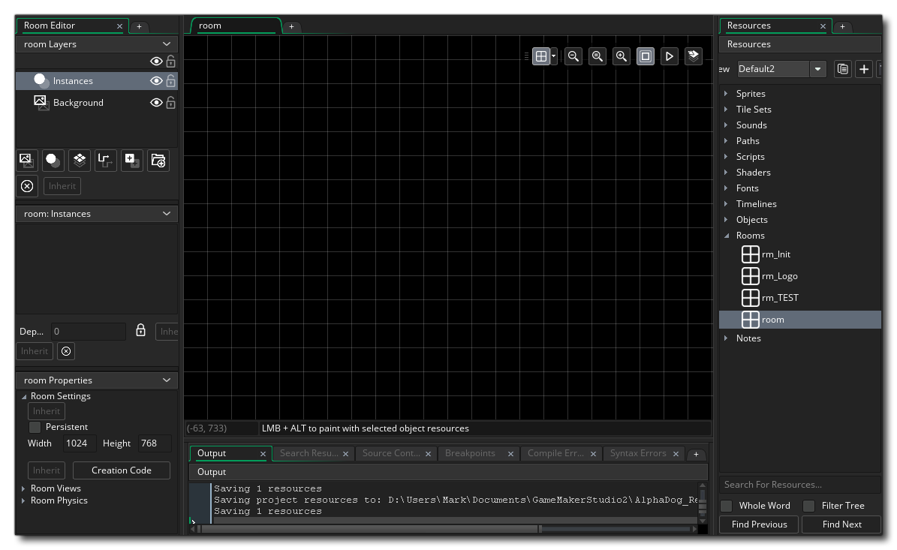

All games that you make in GameMaker Studio 2 need at least one room to run (but can have many, many more) , and a room is just a space where you place instances of the objects that make up your game as well as tiles and any other graphical resources. When you first create a room in your resource tree you will be presented with a new window with which to edit its properties, something like this: 
By default the room tools will be placed on the left, with three main sections:
- Layer Editor: Everything in a room is placed on
layers, and there are different layer types that you can
choose from (more on this later). Layers are ordered by
depth and this depth is what defines the order in which the
layer contents will be rendered to the screen when the game runs.
Depth ordering is from highest to lowest, so that the lower the
depth the nearer the "camera" and the higher the depth the further
away. For example, a layer with a depth of -300 will render over a
layer with a depth of -100, and a layer with a depth of 1000 will
render under everything with a depth less than this.
- Layer Properties: Each layer that you add to the room
will have its own properties, and those properties will change
depending on the layer type. This window permits you to change
those properties and edit how the layer will be rendered.
- Room Properties: Rooms have a number of properties too,
and these can be set here. Things like the room size, the camera
view ports that are active and a few other things can be set
here.
We've mentioned that there are different layer types, so let's just go over what they are and how they can be used when building your games:

|
Background Layer | The background layer is a layer that can be filled with a single colour or a single image. It can be moved and positioned within the room, and you can have multiple background layers. Generally this is used, as the name suggests, to generate a constant background fo rall the other layers in the room. By Default a new room will always contain a background layer, but you can remove it if you don't need it. |

|
Instance Layer | The instance layer is where you place all the
instances of the objects that you require for the game. To add an
instance to a layer, simply click |

|
Tilemap Layer | After having created a tile set, you need to add the tiles to your room, which is done by creating a tilemap layer. A tilemap layer is a layer that permits you to add tiles from any of the tile set resources that you have created and will be set up automatically to use a grid the size of the tile set cells. You can only add a single tile to each grid cell, so if you require multiple tiles to occupy the same space, then you should be using multiple tilemap layers. |

|
Path Layer | The path layer is the only one that does not actually get rendered when you run your game. This layer is more of a "convenience" layer for helping you to create or edit Path resources, since it permits you to add or edit paths within the actual room space. |

|
Asset Layer | Sometimes you want a nice graphical effect but
don't want the overhead of using an instance or don't need it to do
anything other than draw itself. You could use a tilemap,
but given that tilemaps are restricted to using a grid and only a
single image per grid cell, they can be a bit restrictive. This is
when you would use the asset layer. The asset layer simply takes a
sprite resource and draws it using the paramters that you set when
you add it into the room. Sprites can be added to this layer the
same way that instances of objects are added to the instance layer,
ie: you click |